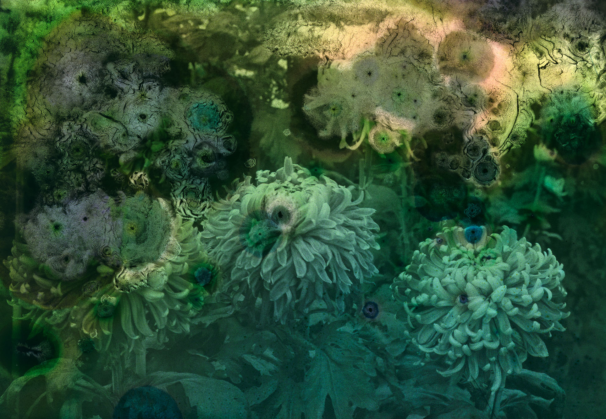

Mold is Beautiful
Luce Lebart / 2024 / curating
Developed in collaboration with Luce Lebart, Mold is Beautiful was presented at Il Meccanico, the exhibition space of Grenze, a Verona-based cultural organization devoted to photography. Centered on the art historian and curator's eponymous project, the exhibition unfolds as a subtle reflection on authorship, shifting aesthetic regimes, and the material and cultural histories of the photographic image.
Développé en collaboration avec Luce Lebart, Mold is Beautiful a été présenté à Il Meccanico, l'espace d'exposition de Grenze, organisation culturelle veronaise dédiée à la photographie. Articulée autour du projet éponyme de l'historienne de l'art et curatrice, l'exposition déploie une réflexion subtile sur la notion d'auteur, les déplacements des régimes esthétiques, ainsi que sur les histoires matérielles et culturelles de l'image photographique.
Il Meccanico, Verona
